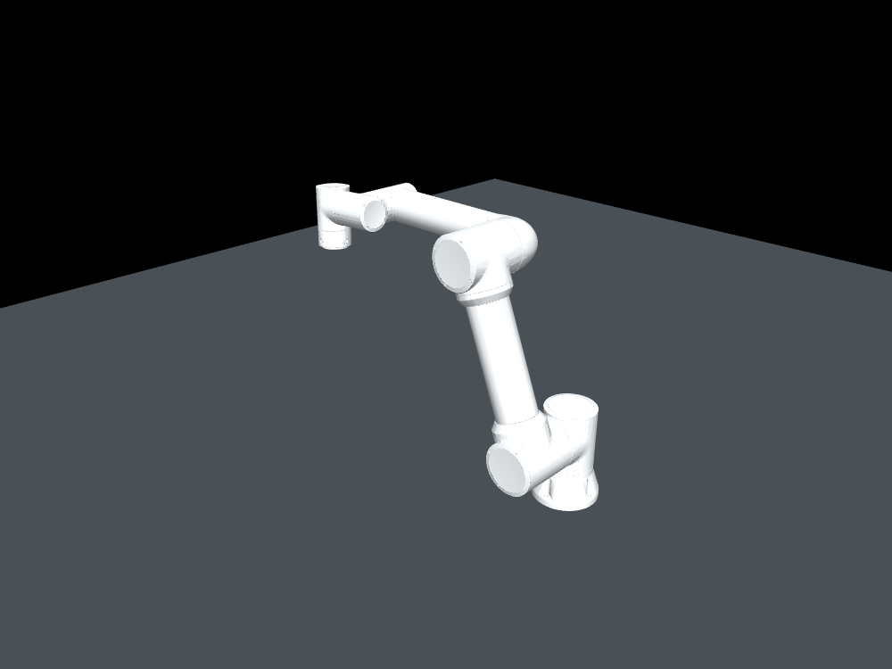
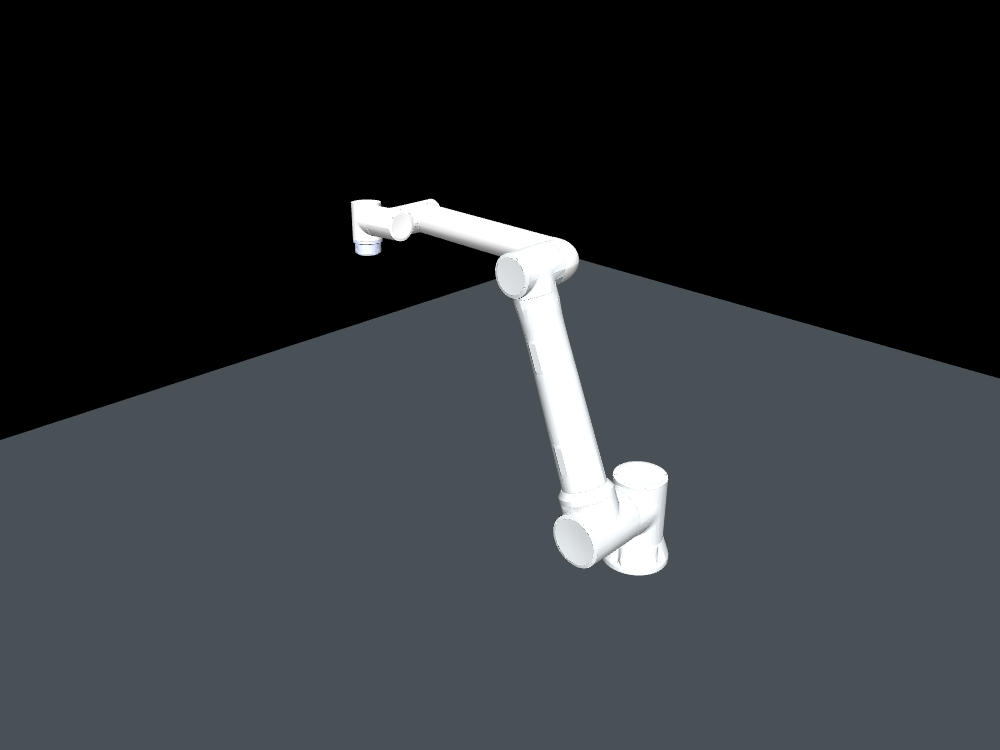
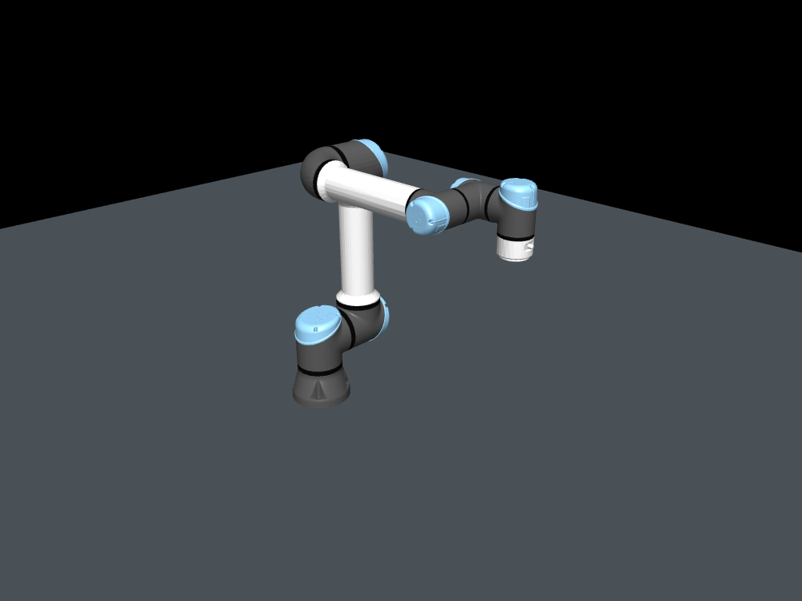

개발 목적과 현재 단계
구성 요소의 교체
로봇·시뮬레이터·모션플랜·제어·뷰어를 모듈로 분리해 교체·확장하는 구조
설치 환경의 반영
현장별 설계파일과 배치를 시뮬레이션 작업환경에 반영하는 절차
동작 검증
구성한 환경에서 로봇의 계획·실행·충돌을 확인하고 결과를 기록하는 기능
현재는 동작 검증에 집중하고 있습니다.
페어이노·UR 로봇을 초기 테스트 기준으로 기능을 개발하고 있습니다.
기능 구현 후에는 지원 로봇의 종류를 확대할 계획입니다.
MuJoCo·ROS 2를 사용하는 이유
초기 장비와 실행 환경을 고려해 MuJoCo로 개발을 시작했습니다.
ROS 2는 기존 개발 스택과 개발자 선호, 다양한 센서·SDK의 연계 활용을 고려해 선택했습니다.
현재 동작과 구현 기능
웹 조작 화면과 MuJoCo·RViz에서 같은 로봇 동작을 확인할 수 있습니다.

2026-10-22 실제 웹·MuJoCo·RViz 촬영 기록입니다. FR5 이동·접근·후퇴·홈 복귀의 4개 요청을 실행했으며, 물체 파지는 포함하지 않습니다.
모델·장면 설정
로봇별 관절·제어 설정을 관리하고, 바닥·받침대를 공통 장면으로 구성합니다.
양팔 계획·실행
공동 계획 또는 팔별 경로와 출발 시점 조정을 적용하고, 경로·간격을 검사해 실행합니다.
통합 웹 조작
관절 목표를 입력해 실행·취소를 요청하고, 라이브 상태·오류·이력을 확인합니다.
감시·기록
접촉·시계 이상을 감시하고 요청·검사·취소·완료 결과를 기록합니다.
도식 1. 계획에서 상태 확인까지
테스트 구성과 확인 범위

FAIRINO FR5 V6
단일 실행 · UR5e와 공동 장면

FAIRINO FR10 V6
단일 실행

Universal Robots UR5e
단일 실행 · FR5와 공동 장면
이미지는 모델별 기준 렌더로 실제 크기 비교 자료가 아닙니다. 현재 웹 조작 화면의 테스트 대상은 FR5·UR5e 공동 장면입니다.
지금까지 확인한 내용
- 단일 모델: 모델별 계획·궤적 실행·정상 종료 확인 (2026-10-06~07)FR5 기록FR10 기록UR5e 기록
- 양팔·웹 통합: 이동·취소·복구와 웹·MuJoCo·RViz 동시 실행 확인 (2026-10-22)통합 검증 기록
- 계측·평가: 근거리 목표 5개 비교와 고정 입력 A/B 등 소규모 평가 기록 (2026-10-21)목표 비교탐색 A/B요청 계측
각 기록은 해당 입력·환경에서의 확인 결과이며, 전체 작업 공간의 성공률이나 장시간 안정성·실물 제어 검증을 의미하지 않습니다.
현재 단계
기본 도형으로 구성한 장면과 관절 목표 기반의 동작 검증을 진행하고 있습니다.
설계파일 기반 환경 구성과 모듈 교체·확장은 후속 개발 목표입니다.
더 살펴보기
개발 배경과 자료 근거
설계파일의 직접 반영과 시각화에 초점을 둔 QML 로컬뷰어도 ROS 2 없이 별도로 개발하고 있습니다. 해당 작업은 설계파일 보안을 위해 비공개로 진행합니다.
자료 확인일: 2026-10-23 · 구현 검토 기준: d2d506f921a545a543b5856faa6d82b42e1dbf46. 검증·영상의 원래 실행일과 조건은 그대로 보존합니다.
- FR5 · FR10 · UR5e모델별 제조사 입력·프레임·프로필·기준 이미지 자료입니다.
- 상시 모션 요청 · 공동 계획·출발 조정현재 전략·최종 검사·실행·취소·기록의 구현 근거입니다.
- 통합 조작 화면공동 장면용 웹 입력·상태 표시·프로세스 관리와 제공 범위입니다.
- 접촉 정지 · 시계 감시공동 시뮬레이션의 물리 고정·취소·정지 원인 기록입니다. 실물 안전 인증·제동 자료가 아닙니다.
- 구성 · 개발 상태공통 프로필·장면·ROS 제어와 상태 표시 구조입니다.
- FR5 검증 · FR10 검증 · UR5e 검증2026-10-06~07의 모델별 실행·종료 원본입니다.
- GUI 동시 실행 검증 · 10-22 촬영 자료GUI 시작·종료 3회, 기능 회귀와 별도 4요청 시연입니다. 시연은 12 fps 반복 프레임을 포함하며 기본 라이브 표시 설정 상한은 5 fps입니다.
- 근거리 목표 비교 · 출발 탐색 A/B · 요청 계측원래 커밋·입력·표본·측정 구간이 서로 다른 기존 평가 자료입니다.